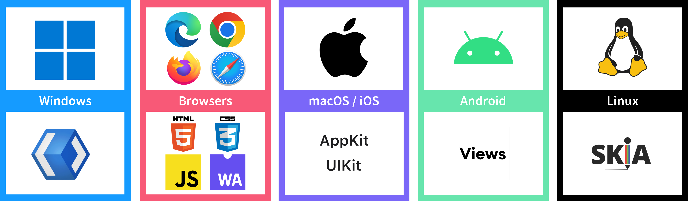
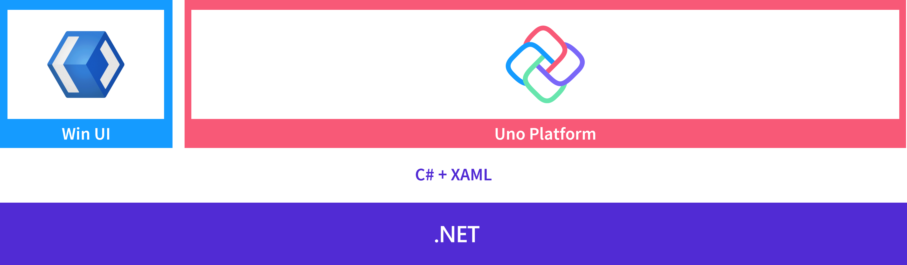
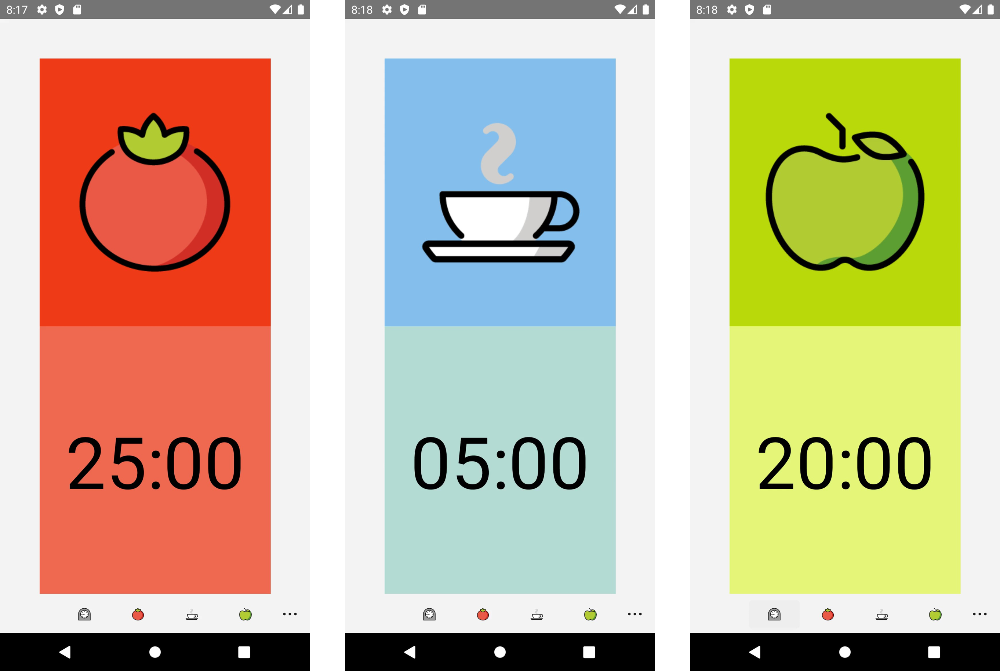

Uno Pomodoro

This article was originally published 15th May 2022 on Linkedin
Uno Platform
Uno Platform allows you to create multi-platform applications using C# and XAML with WinUI with one platform that can run on major operating systems and modern browsers. You can maintain pixel-perfect control with either platform specific or customised look-and-feel. You can develop using your preferred IDE and learn more at platform.uno.
Uno Playground is where you can experiment with the Uno Platform and try out various XAML-based controls or use any new or existing XAML and see what it would look like on desktop, mobile and the web at playground.platform.uno.
Uno Gallery is where you can see a collection of ready-to-use code and components to help speed up your application developing, supporting light and dark themes and try them out on desktop, mobile and web at gallery.platform.uno.
Getting Started
Uno Platform also has NuGet packages to help speed up development including Uno.Extensions which has key features including Dependency Injection, Configuration, HTTP, Logging, Serialisation, Environments, Localisation and Hosting. There is also Uno.Toolkit which are multi-platform first UI components available for free for individual developers and businesses making less than $1,000,000 per year, they include controls like TabBar for tab-based navigation, Navigation Bar to help create navigation logic such as back buttons, Auto Layout to help create dynamic layouts that handle different screen sizes and Drawer which can help provide quick access to destinations and functionality by pulling on icons or pinned on screen.
Uno Platform can developed on Windows using Visual Studio 2022, Visual Studio Code and JetBrains Rider. If developing on the mac you can use Visual Studio for Mac, Visual Studio Code or JetBrains Rider and if using Linux can use Visual Studio Code or JetBrains Rider, you can get more details on what is supported and how to get setup and started on Windows, mac or Linux at platform.uno.
Targets & Architecture
Uno Platform allows you to target Windows 10 and 11 using WinUI and Modern Browsers such as Microsoft Edge, Google Chrome, Firefox and Safari using HTML 5, CSS3, JavaScript and WebAssembly. You can also target macOs and iOS using AppKit or UIKit, along with Android using Views and Linux or Tizen with SKIA, plus along with WPF you could even target Windows 7!
Uno Platform is based on the foundation of .NET with application code using C# and XAML. Windows uses WinUI to run directly against the Windows API and Uno Platform extends the readh of WinUI beyond Windows to reach modern browsers or macOS, iOS and Android currently using Xamarin, along with Linux plus .NET 6 is also supported across all platforms.
Pomodoro Technique
Pomodoro Technique is a time-management method developed by Francesco Cirillo in the late 1980s using a timer to break work into intervals, this timer was shaped like a tomato and the method was named for the Italian for tomato - pomodoro. The method works as follows, you first decide on a task then set a timer for a period of time, usually around 25 minutes and start working. Once the timer has elapsed you should then take a short 5 - 10 minute break and then set the timer and work for another 25 minutes. This work-break cycle is known as a pomodoro, after four of these have been completed you should then take a long 20 - 30 minute break. You should then start the whole pattern again until your task is completed.
Pomodoro App for Uno Platform
Uno Platform allows you to create any application including a Pomodoro App that has timers for Work, Short Break and Long Break which can be ran on Windows, Browsers or as shown on Android. You can also have functionality that can be platform-specific, for example the Pomodoro App also uses the Scheduled Toast Notifications built into Windows 10 / 11 so you can have a reminder appear even if the application is in the background or is no longer running. Applications no longer need be developed for just one platform, or even developed just on one platform, and you can even use a Pomodoro Timer to help with creating the next application, and each and every one after that! You can download the code for the Pomodoro App for Uno Platform at github.com/RoguePlanetoid/UnoPomodoro.